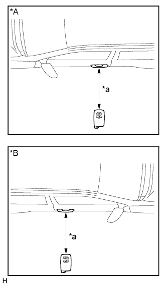
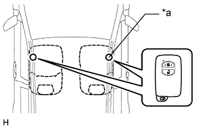
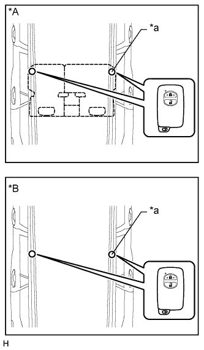
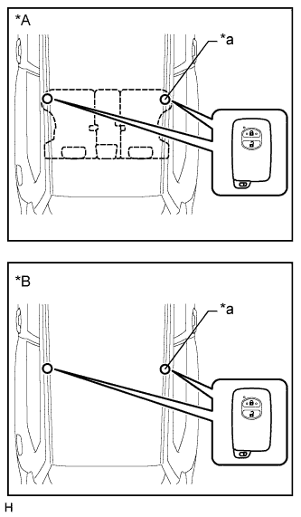
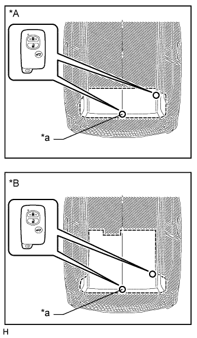
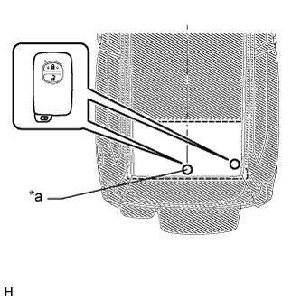
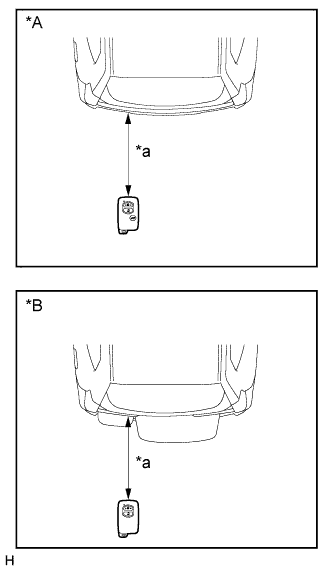

СИСТЕМА ПОСАДКИ И ЗАПУСКА (для моделей с функцией посадки) > ОПИСАНИЕ СИСТЕМЫ |
| ОПИСАНИЕ СИСТЕМЫ ПОСАДКИ И ЗАПУСКА |
В дополнение к традиционному механическому ключу и функциям дистанционного управления замками дверей система посадки и запуска осуществляет блокировку/разблокировку дверей, снятие блокировки рулевого управления, запуск системы управления двигателем и открывание двери багажного отделения без ключа. Единственным условием является наличие ключа у пользователя.
| ОБЛАСТЬ ОБНАРУЖЕНИЯ |
| *1 | Внутренняя антенна электронного ключа № 1 в сборе (в переднем полу) | *2 | Антенна электронного ключа |
| *3 | Внутренняя антенна электронного ключа № 2 в сборе (в заднем полу) | *4 | Внутренняя антенна электронного ключа № 3 в сборе (внутри багажного отделения) |
| *5 | Антенна электронного ключа (снаружи багажного отделения) | - | - |
| *a | Приблизительно 0,7–1,0 м (2,30–3,28 фута) | - | - |
 | Внутренняя зона обнаружения | Наружная зона обнаружения |
Меры предосторожности при использовании системы в целом:
| НАЗНАЧЕНИЕ ОСНОВНЫХ УСТРОЙСТВ |
| Устройство | Назначение |
| ЭБУ сертификации | Управляет системой посадки и запуска в соответствии с сигналами, получаемыми от каждой антенны, различных переключателей, ЭБУ и ключа.
|
| Главный ЭБУ кузова |
|
| ЭБУ распределения питания | Управляет функцией запуска с помощью нажимного выключателя в соответствии с сигналами от различных переключателей, ЭБУ и щитка приборов.
|
| Блок идентификационного кода |
|
| Внутренняя антенна электронного ключа (в переднем полу, в заднем полу и внутри багажного отделения) | Получает сигнал запроса от ЭБУ сертификации и формирует зону обнаружения в салоне автомобиля. |
| Приемник системы блокировки дверей | Принимает идентификационный код от находящегося в зоне обнаружения и передает его в ЭБУ сертификации. |
| Антенна электронного ключа (снаружи багажного отделения) | Получает сигнал запроса от ЭБУ сертификации и формирует зону обнаружения вокруг двери багажного отделения. |
| Выключатель электронного ключа багажного отделения |
|
| Наружная ручка передней двери (со стороны водителя, переднего пассажира) |
|
| Ключ | Состоит из механического ключа, передатчика системы дистанционного управления замками дверей и приемопередатчика системы посадки и запуска. |
| Зуммер системы дистанционной блокировки дверей Щиток приборов
| Когда ЭБУ сертификации обнаруживает ошибки пользователя, рассмотренные ниже, для информирования водителя ЭБУ сертификации включает зуммер системы дистанционного управления замками дверей, отображает информацию и включает зуммер в соответствии с сигналом запроса от ЭБУ. Пример:
|
| КОНСТРУКЦИЯ И ПРИНЦИП РАБОТЫ |
Ключ:
Всего можно зарегистрировать 7 ключей.
Передатчик электронного ключа:
Передатчик электронного ключа содержит механический ключ, передатчик системы дистанционного управления замками дверей и приемопередатчик системы посадки и запуска.
| *1 | Переключатель блокировки | *2 | Переключатель разблокировки |
| *3 | Выключатель механизма открывания заднего стекла (для моделей с механизмом открывания заднего стекла) | *4 | Механический ключ |
Антенна (передней двери, в переднем полу, в заднем полу, внутри и снаружи багажного отделения):
Каждая антенна передает сигнал запроса, полученный от ЭБУ сертификации, и формирует зону работы ключа, чтобы обнаружить присутствие ключа. Область обнаружения, формируемая антеннами передних дверей и антенной снаружи багажного отделения, составляет приблизительно 0,7 - 1,0 м (2,30 - 3,28 фута) от наружных ручек передних дверей и от заднего бампера.
| РАБОТА ФУНКЦИИ ПОСАДКИ |
Система посадки и запуска имеет следующие функции.
| Функция | Описание |
| Механический ключ | Работает так же, как обычный механический ключ. |
| Дистанционное управление блокировкой дверей | Функция дистанционно блокирует и разблокирует все двери и дверь багажного отделения. Работает так же, как система дистанционного управления замками дверей. Однако приемник ЭБУ сертификации использует приемник системы дистанционного управления замками дверей для управления блокировкой и разблокировкой. |
| Освещение при посадке | Когда ключ находится в области обнаружения, дверь переходит в состояние ожидания разблокировки, и включается лампа освещения салона. |
| Разблокировка посредством системы посадки | Когда ключ находится в области обнаружения антенны электронного ключа, дверь можно разблокировать прикосновением к внутренней стороне наружной ручки передней двери. |
| Переключение режима разблокировки системы посадки (Нажмите здесь) | Переключение между 2 режимами разблокировки дверей посредством функции разблокировки системы посадки.
|
| Блокировка посредством системы посадки |
|
| Разблокировка двери багажного отделения системы посадки | Когда ключ находится в области обнаружения антенны электронного ключа снаружи багажного отделения, дверь багажного отделения можно разблокировать нажатием выключателя разблокировки на выключателе электронного ключа багажного отделения. |
| Открывание заднего стекла с помощью системы посадки*1 | Когда ключ находится в области обнаружения антенны электронного ключа снаружи багажного отделения, заднее стекло открывается нажатием выключателя механизма открывания заднего стекла. |
| Обращение к памяти*2 | Данная функция управляет системой сохранения положения во время поездки в соответствии с идентификационным кодом ключа. |
| Предотвращение блокировки ключа |
|
| Предупреждение | В любой из ситуаций, рассмотренных ниже, система посадки и запуска заставляет ЭБУ сертификации включать зуммер в щитке приборов и зуммер системы дистанционной блокировки дверей, и отображать информацию на дисплее.
|
| Экономия энергии батарей | Если ключ постоянно находится в области обнаружения дверной антенны, система осуществляет периодический обмен данными с ключом. Соответственно, если автомобиль находится в данном состоянии в течение длительного времени, батарея ключа и аккумуляторная батарея автомобиля могут разрядиться. В связи с этим в автомобиле предусматриваются функции для экономии заряда батареи. |
| Отмена ключа (Нажмите здесь) | Следующие функции ключа можно отменить:
|
| ФУНКЦИЯ РАЗБЛОКИРОВКИ ПОСРЕДСТВОМ СИСТЕМЫ ПОСАДКИ |
Для обнаружения ключа формируется область обнаружения посредством обмена данными между антенной электронного ключа и ЭБУ сертификации, когда двери заблокированы.
Когда ключ находится в области обнаружения вокруг автомобиля, автоматически выполняется сопоставление идентификационных кодов ключа и антенны электронного ключа. После выполнения сопоставления дверь переходит в состояние ожидания разблокировки.
В состоянии ожидания разблокировки антенна электронного ключа, встроенная в наружную ручку двери, начинает работать. Если наружная ручка удерживается (зафиксировано прикосновение к внутренней стороне ручки), выполняется разблокировка дверей. В этот момент контрольные лампы аварийного состояния мигают 2 раза.
Если после разблокировки ни одна из дверей не открывается, все двери автоматически блокируются через 30 секунд.
| ФУНКЦИЯ БЛОКИРОВКИ ПОСРЕДСТВОМ СИСТЕМЫ ПОСАДКИ |
После выхода из автомобиля с ключом, закрыв предварительно все двери, прикоснитесь к датчику блокировки на наружной ручке двери или нажмите выключатель разблокировки на выключателе электронного ключа багажного отделения.
ЭБУ сертификации определяет, находится ли ключ внутри или снаружи салона на основании сведений, полученных от антенны электронного ключа и внутренней антенны электронного ключа. Выполняется сравнение идентификационных кодов.
Если в результаты сравнения показывают, что электронный ключ не обнаружен внутри автомобиля, а идентификационные коды ключа и антенны электронного ключа совпадают, срабатывает функция блокировки дверей. В этот момент контрольные лампы аварийного состояния мигают один раз.
Если ключ находится внутри салона, функция блокировки дверей не работает, и в течение 2 секунд звучит зуммер сигнализации (звуковой сигнал).
| ФУНКЦИЯ РАЗБЛОКИРОВКИ ДВЕРИ БАГАЖНОГО ОТДЕЛЕНИЯ ПРИ ПОСАДКЕ |
| ФУНКЦИЯ ОТКРЫВАНИЯ ЗАДНЕГО СТЕКЛА С ПОМОЩЬЮ СИСТЕМЫ ПОСАДКИ (для моделей с механизмом открывания заднего стекла) |
| ФУНКЦИЯ ПРЕДОТВРАЩЕНИЯ БЛОКИРОВКИ КЛЮЧА |
Если ключ находится в салоне и двери закрыты, при попытке использовать функцию блокировки системы посадки (фиксируется касание датчика блокировки на наружной ручке двери), система определяет, что ключ находится в салоне, и разблокирует двери.
Если дверь багажного отделения закрыта, и нажат выключатель блокировки, когда ключ находится в автомобиле и другие двери закрыты, то звучит звуковая сигнализация, и дверь багажного отделения не блокируется.
Если заднее стекло закрывается, когда ключ находится в автомобиле, и все двери заблокированы, то звучит звуковая сигнализация, и заднее стекло можно открыть нажатием выключателя механизма открывания заднего стекла, чтобы предотвратить запирание ключа в автомобиле.*
| ФУНКЦИЯ ОСВЕЩЕНИЯ ПРИ ПОСАДКЕ |
| ФУНКЦИЯ ОБРАЩЕНИЯ К ПАМЯТИ (для моделей с функцией памяти) |
Если дверь водителя разблокируется посредством электронного ключа с идентификационным кодом, а затем открывается, сиденье и рулевое колесо автоматически передвигаются в положения, зарегистрированные для данного идентификационного кода ключа.
Более подробная информация по функции обращения к памяти приводится в разделе по системе передних сидений с электроприводом (Нажмите здесь).
| ФУНКЦИЯ ПРЕДУПРЕЖДЕНИЯ |
Общие сведения:
При возникновении одной из нижеприведенных ситуаций система посадки и запуска предупреждает водителя.
| Условия срабатывания функции предупреждения | Ситуация |
| Рычаг переключения передач не установлен в положение P – предупреждение при выходе из автомобиля (оповещение об отсечке источника питания)*1 | A |
| Предупреждение об оставлении ключа в салоне автомобиля | B |
| Рычаг переключения передач установлен в положение P – предупреждение при выходе из автомобиля (оповещение об отсечке источника питания)*1 | C |
| Предупреждение о неплотно закрытой двери | D |
| Предупреждение, когда пассажир покидает автомобиль с ключом | E |
| Предупреждение, когда ключ находится вне области обнаружения | F |
| Зуммер функции предотвращения блокировки ключа (в салоне) | G |
| Зуммер функции предотвращения блокировки ключа (для заднего стекла)*2 | H |
| Предупреждение о низком заряде батареи ключа | I |
Ситуация А:
Рычаг переключения передач не установлен в положение P – предупреждение при выходе из автомобиля (оповещение об отсечке источника питания)
Рычаг переключения передач не находится в положении P, дверь водителя открыта, и предпринята попытка покинуть автомобиль (с ключом).
| Назначение предупреждения: Предотвращение внезапного начала движения автомобиля, угона автомобиля, отката автомобиля | |||
| Условие начала вывода предупреждения: Рычаг переключения передач не находится в положении P, зажигание включено (ACC или IG), дверь водителя открыта и скорость автомобиля составляет 0 км/час (0 миль в час) | |||
| Условие прекращения вывода предупреждения: Зажигание выключено, рычаг переключения передач установлен в положение P, скорость автомобиля превышает 0 км/час (0 миль в час) или дверь водителя закрыта | |||
| Описание предупреждения | Зуммер щитка приборов | Многофункциональный зуммер | Звучит непрерывно (звуковой сигнал) |
| Дисплей щитка приборов | Информация на щитке приборов | "Shift to P Range" (Переключитесь в положение P) | |
| Сигнальная функция | Отсутствует | ||
| Зуммер системы дистанционного управления замками дверей | Отсутствие звукового сигнала | ||
| Рекомендуемое действие пользователя | Установите рычаг переключения передач в положение Р | ||
Рычаг переключения передач не находится в положении P, дверь водителя открыта, ключ удален из автомобиля, дверь водителя закрыта и предпринята попытка отойти от автомобиля.
| Назначение предупреждения: Предотвращение внезапного начала движения автомобиля, угона автомобиля, отката автомобиля | |||
| Условие начала вывода предупреждения: Рычаг переключения передач не находится в положении P, зажигание включено (ACC или IG), открытая дверь водителя закрывается, скорость автомобиля составляет 0 км/час (0 миль в час) и ключ отсутствует в области обнаружения внутри салона или багажного отделения | |||
Условие прекращения вывода предупреждения:
| |||
| Описание предупреждения | Зуммер щитка приборов | Многофункциональный зуммер | Звучит непрерывно (звуковой сигнал) |
| Дисплей щитка приборов | Информация на щитке приборов | На щитке приборов попеременно отображаются следующие сообщения: "Shift to P Range" (Переключитесь в положение P) "Key is not detected" - "Check key position" (ключ не обнаружен - проверьте местонахождение ключа) | |
| Сигнальная функция | Отсутствует | ||
| Зуммер системы дистанционного управления замками дверей | Звучит непрерывно (звуковой сигнал) | ||
| Рекомендуемое действие пользователя | Установите рычаг переключения передач в положение Р | ||
Ситуация В:
Предупреждение об оставлении ключа в салоне автомобиля
Блокировка рулевого управления снята, дверь водителя открыта и предпринята попытка отойти от автомобиля.
| Назначение предупреждения: Предотвращение угона автомобиля, требуется законом | |||
| Предварительное условие: Дистанционный запуск не задействован | |||
Условие начала вывода предупреждения: Выполняется одно из следующих условий:
| |||
Условие прекращения вывода предупреждения: Выполняется одно из следующих условий:
| |||
| Описание предупреждения | Зуммер щитка приборов | Многофункциональный зуммер | Звучит периодически (несколько звуковых сигналов с переменной интенсивностью) |
| Дисплей щитка приборов | Информация на щитке приборов | Нет | |
| Сигнальная функция | Отсутствует | ||
| Зуммер системы дистанционного управления замками дверей | Отсутствие звукового сигнала | ||
| Рекомендуемое действие пользователя | Если зажигание включено (ACC или IG), выключите зажигание и закройте дверь водителя | ||
Ситуация С:
Рычаг переключения передач установлен в положение P – предупреждение при выходе из автомобиля (оповещение об отсечке источника питания)
Рычаг переключения передач находится в положении P, дверь водителя открыта, ключ удален из автомобиля, дверь водителя закрыта и предпринята попытка отойти от автомобиля.
| Назначение предупреждения: Предотвращение угона автомобиля, невозможности перезапуска двигателя, разрядки батареи | |||
| Условие начала вывода предупреждения: Рычаг переключения передач находится в положении P, зажигание включено (ACC или IG), открытая дверь водителя закрывается и ключ отсутствует в области обнаружения внутри салона или багажного отделения | |||
| Условие прекращения вывода предупреждения: Зажигание выключено, или ключ обнаруживается в салоне или багажном отделении | |||
| Описание предупреждения | Зуммер щитка приборов | Многофункциональный зуммер | Звучит однократно (один звуковой сигнал с переменной интенсивностью) (если ключ не определяется постоянно, звучит еще раз, когда автомобиль начинает движение) |
| Дисплей щитка приборов | Информация на щитке приборов | "Key is not detected" - "Check key position" (ключ не обнаружен - проверьте местонахождение ключа) | |
| Сигнальная функция | Отсутствует | ||
| Зуммер системы дистанционного управления замками дверей | Звучит 3 раза (короткие звуковые сигналы) | ||
| Рекомендуемое действие пользователя | Выключите зажигание и покиньте автомобиль с ключом | ||
Рычаг переключения передач находится в положении Р, зажигание включено (ACC или IG), дверь водителя открыта, пользователь отходит от автомобиля и датчик блокировки на наружной ручке нажат с целью выполнения функции блокировки системы посадки.
| Назначение предупреждения: Предотвращение угона автомобиля, разрядка батареи | |||
| Предварительное условие: Выключатель системы блокировки дверей переводится из выключенного состояния во включенное | |||
| Условие начала вывода предупреждения: Рычаг переключения передач находится в положении P, зажигание включено (ACC или IG), все двери закрыты, дверь водителя открыта и закрыта, ключ обнаружен снаружи автомобиля и не обнаружен внутри салона, и датчик блокировки включен | |||
Условие прекращения вывода предупреждения: Выполняется одно из следующих условий:
| |||
| Описание предупреждения | Зуммер щитка приборов | Многофункциональный зуммер | Звучит однократно (один звуковой сигнал с переменной интенсивностью) (если ключ не определяется постоянно, звучит еще раз, когда автомобиль начинает движение) |
| Дисплей щитка приборов | Информация на щитке приборов | Нет | |
| Сигнальная функция | Отсутствует | ||
| Зуммер системы дистанционного управления замками дверей | Звучит непрерывно (звуковой сигнал) | ||
| Рекомендуемое действие пользователя | Выключите зажигание и выполните блокировку с помощью системы посадки | ||
Ситуация D:
Предупреждение о неплотно закрытой двери
Предпринята попытка блокировки дверей с помощью системы посадки, когда одна из дверей автомобиля открыта.
| Назначение предупреждения: Предотвращение угона автомобиля | |||
| Предварительное условие: Зажигание включено (ACC) или выключено, и одна из дверей открыта | |||
| Условие начала вывода предупреждения: Заданные условия удовлетворяются, и выполняется функция блокировки системы посадки | |||
| Условие прекращения вывода предупреждения: Зажигание включено (ACC или IG), все двери закрыты, выполняется дистанционная разблокировка, выполняется разблокировка посредством системы посадки или с момента вывода предупреждения прошло 10 с | |||
| Описание предупреждения | Зуммер щитка приборов | Многофункциональный зуммер | Нет |
| Дисплей щитка приборов | Информация на щитке приборов | Нет | |
| Сигнальная функция | Отсутствует | ||
| Зуммер системы дистанционного управления замками дверей | Звучит непрерывно (звуковой сигнал) | ||
| Рекомендуемое действие пользователя | Закройте все двери и выполните блокировку с помощью системы посадки | ||
Ситуация E:
Предупреждение, когда пассажир покидает автомобиль с ключом
Когда зажигание находится в любом состоянии, отличном от выключенного, пассажир покидает автомобиль с ключом.
| Назначение предупреждения: Предотвращение невозможности перезапуска двигателя | |||
| Условие начала вывода предупреждения: Зажигание включено (ACC или IG), любая открытая дверь, кроме двери водителя, закрывается, скорость автомобиля составляет 0 км/час (0 миль в час) и ключ отсутствует в области обнаружения внутри салона или багажного отделения | |||
| Условие прекращения вывода предупреждения: Зажигание выключено, и ключ обнаруживается в салоне или багажном отделении | |||
| Описание предупреждения | Зуммер щитка приборов | Многофункциональный зуммер | Звучит однократно (один звуковой сигнал с переменной интенсивностью) (если ключ не определяется постоянно, звучит еще раз, когда автомобиль начинает движение) |
| Дисплей щитка приборов | Информация на щитке приборов | "Key is not detected" - "Check key position" (ключ не обнаружен - проверьте местонахождение ключа) | |
| Сигнальная функция | Отсутствует | ||
| Зуммер системы дистанционного управления замками дверей | Звучит 3 раза (короткие звуковые сигналы) | ||
| Рекомендуемое действие пользователя | Проверить, находится ли ключ у пассажира, покинувшего автомобиль | ||
Ситуация F:
Предупреждение, когда ключ находится вне области обнаружения
Когда ключ не находится в салоне автомобиля или батарея ключа разряжена, предпринята попытка включения зажигания (ACC или IG).
| Назначение предупреждения: Предотвращение замешательства пользователя | |||
| Состояние предупреждения: Зажигание выключено и ключ не находится в области обнаружения внутри автомобиля | |||
| Описание предупреждения | Зуммер щитка приборов | Многофункциональный зуммер | Звучит один раз (один звуковой сигнал с переменной интенсивностью) |
| Дисплей щитка приборов | Информация на щитке приборов | В течение 10 с отображается сообщение "Key is not detected" - "Check key position" (ключ не обнаружен - проверьте местонахождение ключа), а затем отображение прекращается | |
| Сигнальная функция | Отсутствует | ||
| Зуммер системы дистанционного управления замками дверей | Отсутствие звукового сигнала | ||
| Рекомендуемое действие пользователя | Убедитесь, что ключ находится в области обнаружения внутри автомобиля Если ключ находится в области обнаружения внутри автомобиля, возможно, разрядилась батарея ключа Убедитесь, что при нажатии выключателя системы дистанционного управления замками дверей загорается светодиод на ключе Если индикатор не загорается, замените батарею ключа Рекомендуется, чтобы замена батареи выполнялась дилером, но батарею может заменить любой специалист по выбору пользователя | ||
Ситуация G:
Зуммер функции предотвращения блокировки ключа (в салоне)
Ключ находится в салоне, водитель выходит из автомобиля и нажимает выключатель блокировки на наружной ручке с целью блокировки дверей посредством системы посадки.
| Назначение предупреждения: Предотвращение оставления ключа в салоне, угона автомобиля | |||
| Состояние предупреждения: Зажигание выключено, все двери закрыты, датчик блокировки на наружной ручке включен, и ключ обнаружен внутри автомобиля | |||
| Описание предупреждения | Зуммер щитка приборов | Многофункциональный зуммер | Нет |
| Дисплей щитка приборов | Информация на щитке приборов | Нет | |
| Сигнальная функция | Отсутствует | ||
| Зуммер системы дистанционного управления замками дверей | Звучит непрерывно (звуковой сигнал) | ||
| Рекомендуемое действие пользователя | Извлечь ключ из салона автомобиля и повторить блокировку дверей посредством системы посадки | ||
Ситуация Н:
Зуммер функции предотвращения блокировки ключа (для заднего стекла)
Ключ находится в салоне автомобиля, и заднее стекло случайно закрывается.
| Назначение предупреждения: Блокировка ключа | |||
| Предварительное условие: Скорость автомобиля составляет 0 км/час (0 миль в час), и выполняется функция открывания заднего стекла системы посадки (не установлена пользователем в выключенное состояние) | |||
| Условие начала вывода предупреждения: Все двери заблокированы, заднее стекло закрыто, и ключ обнаружен внутри автомобиля | |||
| Описание предупреждения | Зуммер щитка приборов | Многофункциональный зуммер | Нет |
| Дисплей щитка приборов | Информация на щитке приборов | Отсутствует | |
| Зуммер системы дистанционного управления замками дверей | Звучит в течение 10 с (звуковой сигнал) | ||
| Рекомендуемое действие пользователя | Посредством функции открывания заднего стекла системы посадки откройте заднее стекло и достаньте ключ | ||
Ситуация I:
Предупреждение о низком заряде батареи ключа
Для управления автомобилем используется ключ с почти разряженной батареей.
| Назначение предупреждения: Полезная функция | |||
| Состояние предупреждения: После того, как зажигание включено в течение не менее 20 мин, зажигание выключается, заряд батареи ключа низкий и ключ обнаружен внутри автомобиля | |||
| Описание предупреждения | Зуммер щитка приборов | Многофункциональный зуммер | Звучит один раз (один звуковой сигнал с переменной интенсивностью) |
| Дисплей щитка приборов | Информация на щитке приборов | "Low Key Battery" - "Have your vehicle checked by a dealer" (батарея ключа разряжена - проверьте автомобиль у дилера) | |
| Сигнальная функция | Отсутствует | ||
| Зуммер системы дистанционного управления замками дверей | Отсутствие звукового сигнала | ||
| Рекомендуемое действие пользователя | Замените батарею ключа новой Рекомендуется, чтобы замена батареи выполнялась дилером, но батарею может заменить любой специалист по выбору пользователя | ||
| ЭНЕРГОСБЕРЕЖЕНИЕ БАТАРЕЙ |
Функция энергосбережения аккумуляторной батареи автомобиля:
Во время работы системы посадки и запуска сигналы передаются за пределы автомобиля с заданным интервалом (0,25 с), когда двери заблокированы. В связи с этим аккумуляторная батарея может разрядиться при парковке в течение длительного времени. По этой причине предусмотрены следующие функции.
| Условие | Функция управления |
Оба условия выполняются в течение 5 дней:
| Интервал передачи сигналов увеличивается с 0,25 до 0,75 с |
Оба условия выполняются в течение 14 дней:
| Система посадки и запуска автоматически отключается |
Функция энергосбережения батареи ключа и аккумуляторной батареи автомобиля:
Во время работы системы посадки и запуска, если ключ постоянно находится в области обнаружения дверей снаружи автомобиля, осуществляется периодический обмен данными с ключом. Соответственно, если автомобиль находится в данном состоянии в течение длительного времени, батарея ключа и аккумуляторная батарея автомобиля могут разрядиться. По этой причине система посадки и запуска автоматически отключается, если данное состояние длится более 10 мин.
Условия восстановления:
| РЕЖИМ ДИАГНОСТИКИ КЛЮЧА (с помощью портативного диагностического прибора) |
Подсоедините портативный диагностический прибор к DLC3.
Включите зажигание (IG).
Включите портативный диагностический прибор.
Войдите в следующие меню: Body / Entry&Start / Key Communication Check.
Проверьте значения в соответствии с таблицей ниже.
| Информация на дисплее прибора | Место проверки |
| Overhead + Driver Side*1 | Антенна электронного ключа (со стороны водителя) |
| Overhead + Passenger Side*2 | Антенна электронного ключа (со стороны переднего пассажира) |
| Overhead + Front Room*3 | Внутренняя антенна электронного ключа № 1 (в переднем полу) |
| Overhead + Rear Room*4 | Внутренняя антенна электронного ключа № 2 (в заднем полу) |
| Overhead + Back Door (inside)*5 | Внутренняя антенна электронного ключа № 3 (внутри багажного отделения) |
| Overhead + Back Door*6 | Антенна электронного ключа (снаружи багажного отделения) |
Когда передатчик электронного ключа находится вблизи выбранной антенны, убедитесь, что звучит зуммер системы дистанционного управления замками дверей.
|  |
*1: Антенна электронного ключа (со стороны водителя)
| *A | Для моделей с левосторонним рулевым управлением |
| *B | Для моделей с правосторонним рулевым управлением |
| *a | 0,7 - 1,0 м (2,30 - 3,28 фута) |
|  |
*3: Внутренняя антенна электронного ключа № 1 (в переднем полу)
| *a | Место проверки |
|  |
*4: Внутренняя антенна электронного ключа № 2 (в заднем полу) (для 5-дверных моделей)
| *A | Для моделей с задним сиденьем № 1 |
| *B | Для моделей без заднего сиденья № 1 |
| *a | Место проверки |
|  |
*4: Внутренняя антенна электронного ключа № 2 (в заднем полу) (для 3-дверных моделей)
| *A | Для моделей с задним сиденьем № 1 |
| *B | Для моделей без заднего сиденья № 1 |
| *a | Место проверки |
|  |
*5: Внутренняя антенна электронного ключа № 3 (внутри багажного отделения) (для 5-дверных моделей)
| *A | Для моделей с задним сиденьем № 2 |
| *B | Для моделей без заднего сиденья № 2 |
| *a | Место проверки |
|  |
*5: Внутренняя антенна электронного ключа № 3 (внутри багажного отделения) (для 3-дверных моделей)
| *a | Место проверки |
|  |
*6: Антенна электронного ключа (снаружи багажного отделения)
| *A | для моделей с механизмом открывания заднего стекла |
| *B | для моделей без механизма открывания заднего стекла |
| *a | 0,7 - 1,0 м (2,30 - 3,28 фута) |